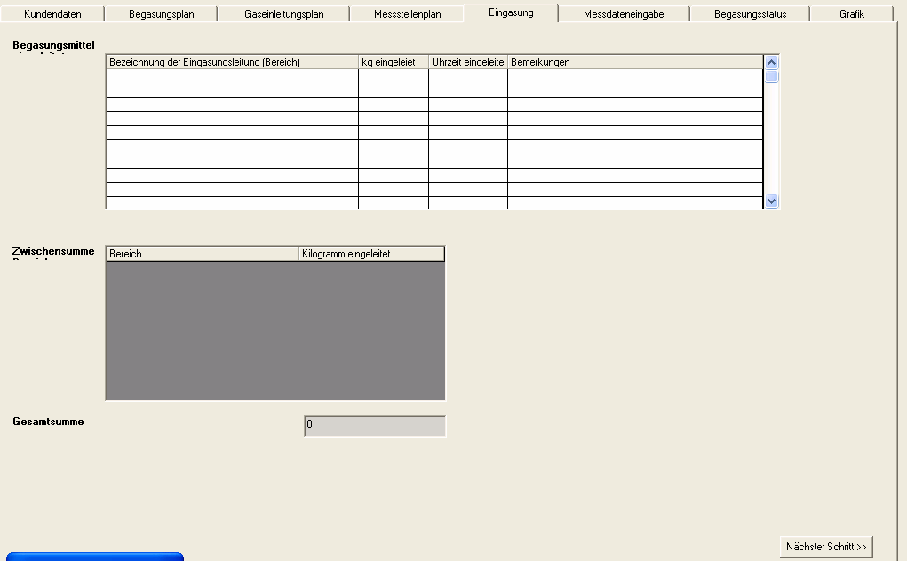
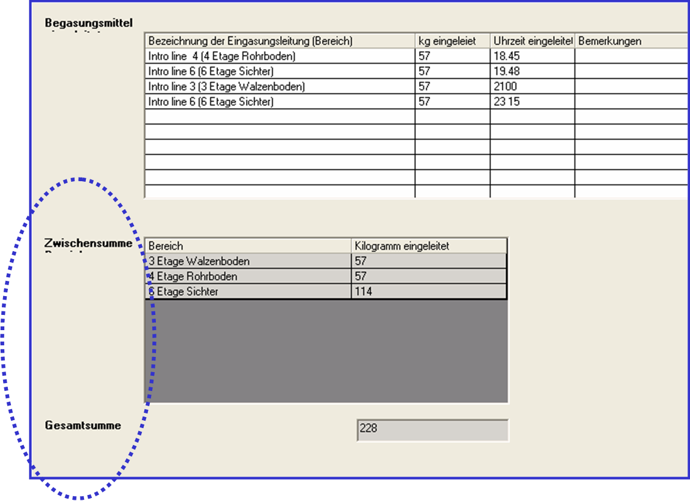
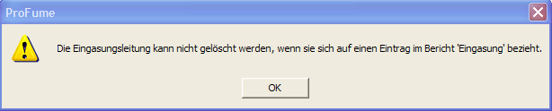
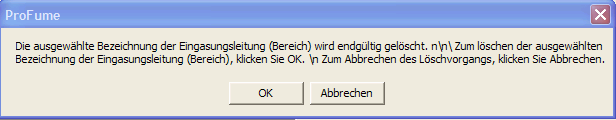

Eingasung-Fenster
Nachdem Sie Ihren Messstellenplan aufgestellt haben, kommt als nächstes Programmfenster die Eingasung.
Im Eingasung-Fenster können die in
den verschiedenen Bereichen eines Objekts freigesetzten Begasungsmittelmengen
protokolliert werden. Hinweis: In diesem Fenster sind keine Felder zwingend
auszufüllen. Nachstehend sehen Sie ein Beispiel für ein Eingasungs-Fenster vor
Eingabe der Daten.

Im nächsten Beispiel hat der Bediener Datum, Uhrzeit und
Mengen der in die einzelnen Bereiche eingeleiteten Begasungsmittelmengen
festgehalten. Auch Notizen wurden für die einzelnen Bereiche eingegeben.
Beachten Sie bitte die mit einer gepunkteten Linie umgebenen Angaben
Zwischensumme Bereiche und die Gesamtsumme Gebäude. Diese
Gesamtsummen werden unterhalb des Eingabefensters für Eingeleitetes
Begasungsmittel errechnet.

Warnmeldungen im Eingasung-Fenster
Die folgende Warnmeldung wird
angezeigt, wenn der Bediener versucht, eine im Gaseinleitungsplan-Fenster
eingerichtete Eingasungsleitung, für die Daten zur Verfügung stehen, zu
löschen.

Before an introduction line can be deleted, the fumigator will be warned with the message box below:
